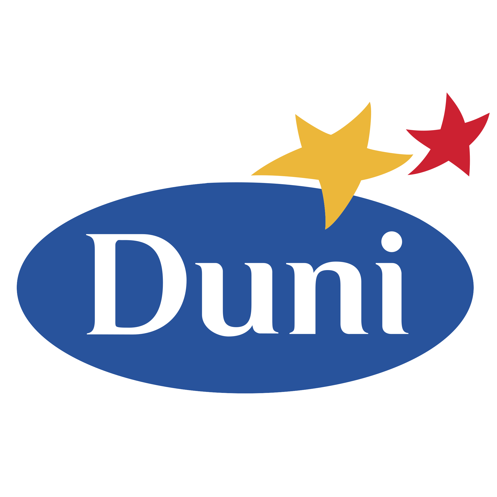
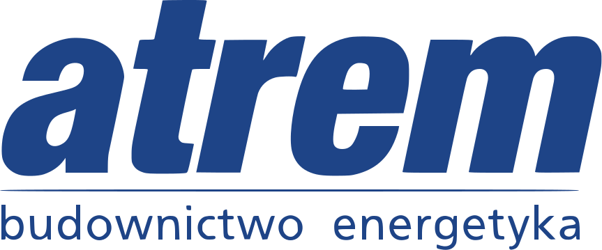

Moje doświadczenie
W firmie Mondi do moich zadań należały m.in tematy instalacji maszyn przetwórczych (bezpieczeństwo, szkolenia oraz sama instalacja). Zajmowałem się tam również utrzymaniem maszyn w ruchu. W firmie Duni moim głównym zadaniem było utrzymanie maszyn w ruchu oraz przeprowadzanie przeglądów. W firmie Atrem zajmuję się programowaniem sterowników PLC, paneli HMI oraz automatyką urządzeń.
O mnie
Jestem studentem politechniki Poznańskiej (ostatni rok), moim motywem przewodnim jest rozwój. Charakteryzuję się jako osoba szukająca wyzwań. Od początku mojej zawodowej kariery obieram różne ścieżki ponieważ się nie ograniczam. Rozwiązywanie najróżniejszych problemów jest dla mnie ogromnie satysfakcjonujące. Jestem osobą, która pracę traktuje jako hobby, dzięki temu uważam, że w życiu przepracowałem mało dni. Lubię czytać blogi o bezpieczeństwie IT. Jestem aktywny nie tylko na tle zawodowym, ale i prywatnym. Zdjęcie z tła zostało wykonane o 6 rano na szczycie Rysy(2501 m n.p.m). Lubię języki wysokopoziomowe, sport,zwierzęta i czytać książki.